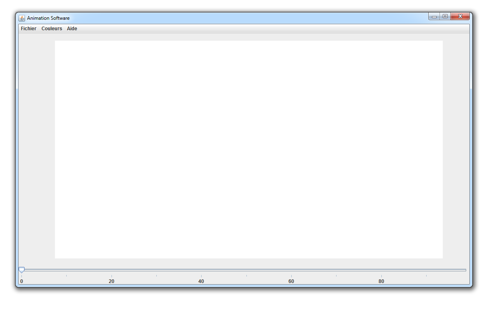

Attention ! Le site ANIMWARE va se reorganiser autour de deux produits distincts : Animware Storyboard et Animware 3D-noms provisoires. Respectivement un logiciel de storyboard 2D et un logiciel d'animation 3D.
Vous consultez actuellement le devblog de STORYBOARD. Le logiciel 3D est en phase de pré-production.
Bienvenue
Bienvenue sur le site d'Animware, le landing page le plus austère des internets !
Si vous êtes ici, c'est que vous êtes un passionné d'animation et d'opensource. Ou alors que vous êtes perdus.
Dans tous les cas, je vous souhaite une bonne découverte ! Voici les features désormais disponibles :
- timeline fonctionnelle de 100 frames
- pinceau rudimentaire
- quelques couleurs
- fonction d'export des images au format .png
- un workspace manipulable : on peut bouger l'espace de dessin
Voici ensuite la liste des features en cours de developpement :
- modification du nombre de frames
- modification de la taille des frames
- workspace encore plus manipulable : on pourra zoomer dans l'espace de dessin
- une palette de couleurs infinie
- les dernières couleurs utilisées
- un système d'Onion skinning
- un système d'aperçu de l'animation (bouton PLAY)
Enfin, ci dessous sont cités les idées les plus ambitieuses et quasiment impossibles à réaliser à mon niveau :
- injecter de l'intelligence artificielle pour accompagner l'artiste dans la production de son animation
Screenshot
Téléchargements
FICHIER .JAR (machine vitruelle JAVA requise)
Téléchargements
Vous pouvez découvrir mes autres projets sur mon Portfolio.
E-mail du projet : contact@animware.com